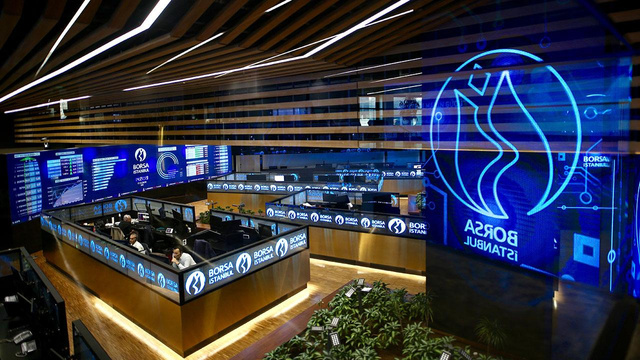

The stock market is one of the beating hearts of the economy. Sometimes we come across headlines like "The stock market rose" or "The index dropped," and other times it becomes a financial arena closely followed by those interested in investing. But what exactly is a stock market? How does the system work in Türkiye? In this article, we provide a basic and accessible introduction to the Turkish Stock Exchange, known as Borsa İstanbul.
What Is a Stock Market?
The stock market is an organized marketplace where companies offer their shares to the public and investors buy and sell them. Not only stocks but also bonds, commodities like gold and silver, futures, and many other financial instruments are traded on the stock exchange. The stock market enables companies to raise capital while giving investors the opportunity to grow their savings. All these transactions take place within a transparent and regulated framework.
What Is Borsa İstanbul (BIST)?
Türkiye's official and organized capital market operates under Borsa İstanbul (BIST). A wide range of financial instruments—stocks, bonds, derivatives, and precious metals—are traded on this platform. It is a vital structure where investors can become shareholders and companies can raise funds. All securities traded in Borsa İstanbul are grouped under indexes that begin with the prefix BIST. One of the most well-known is BIST 100, which reflects the performance of the top 100 companies in terms of market value and trading volume.

Market Structure and Segments
Borsa İstanbul consists of different market segments. The most recognized ones include:
The stock market is not just an investment tool; it also mirrors the general trends and confidence in the economy.
Equity Market: This is where stocks are traded. Debt Securities Market: Government and corporate bonds are traded here. Futures and Options Market (VIOP): This market is for trading derivative products based on future price expectations.
Participants and Accessibility
Both individual and institutional investors participate in Borsa İstanbul. Major players include banks, investment funds, and insurance companies. However, in recent years, the number of individual investors has increased significantly. Thanks to mobile applications and digital brokerage platforms, small investors can now easily access and participate in the stock market.
Understanding Market Indexes
Indexes are used to monitor the overall performance of companies listed on the stock exchange. These indexes reflect the average price movements of selected groups of stocks based on specific criteria. For example:
BIST 30 includes the 30 largest and most liquid companies. BIST 50 and BIST 100 represent a broader selection of companies. There are also sector-based indexes such as banking, transportation, and technology.
Risk and Return
Investing in the stock market always involves some level of risk. Stock prices fluctuate based on supply and demand in the market. While there may be short-term ups and downs, long-term investments based on strong fundamentals can offer significant returns. Investors must understand that becoming a shareholder in a company not only brings profit potential but also the possibility of losses. Therefore, conducting fundamental analysis and staying informed about market developments are essential.
The stock market is a reflection of broader economic health and investor confidence. Market activity reflects factors like investor sentiment, company growth expectations, and economic outlook. For beginners, the world of the stock market may seem complex at first. However, by learning the basic concepts and taking small steps, it becomes easier to understand and navigate. In this context, the Turkish Stock Exchange serves as both a valuable learning environment for improving financial literacy and a platform full of opportunities for investors.